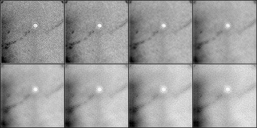
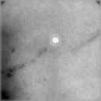
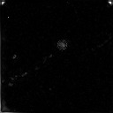

| .OPERATION: | AS S | ; Average Images - Find Variance |
| .INPUT FILE TEMPLATE: | sav_lowpass_pp_stk@*** | ; Prefix of images (input) |
| .FILE NUMBERS OR SELECT DOC. FILE NAME: | 1-8 | ; Numbers of file names in the series |
| .MENU OPTION (A/AS/V/VS/AV/AVS): | AV | ; Average & variance |
| .AVERAGE FILE: | ass_avg | ; Name of Average file (output) |
| .VARIANCE FILE: | ass_var | ; Name of Variance file (output) |
| INPUT FILES | OUTPUT AVERAGE FILE | OUTPUT VARIANCE FILE | |
|---|---|---|---|
|  |  |  | |
| sav_lowpass_pp_stk_mon | ass_avg | ass_var |